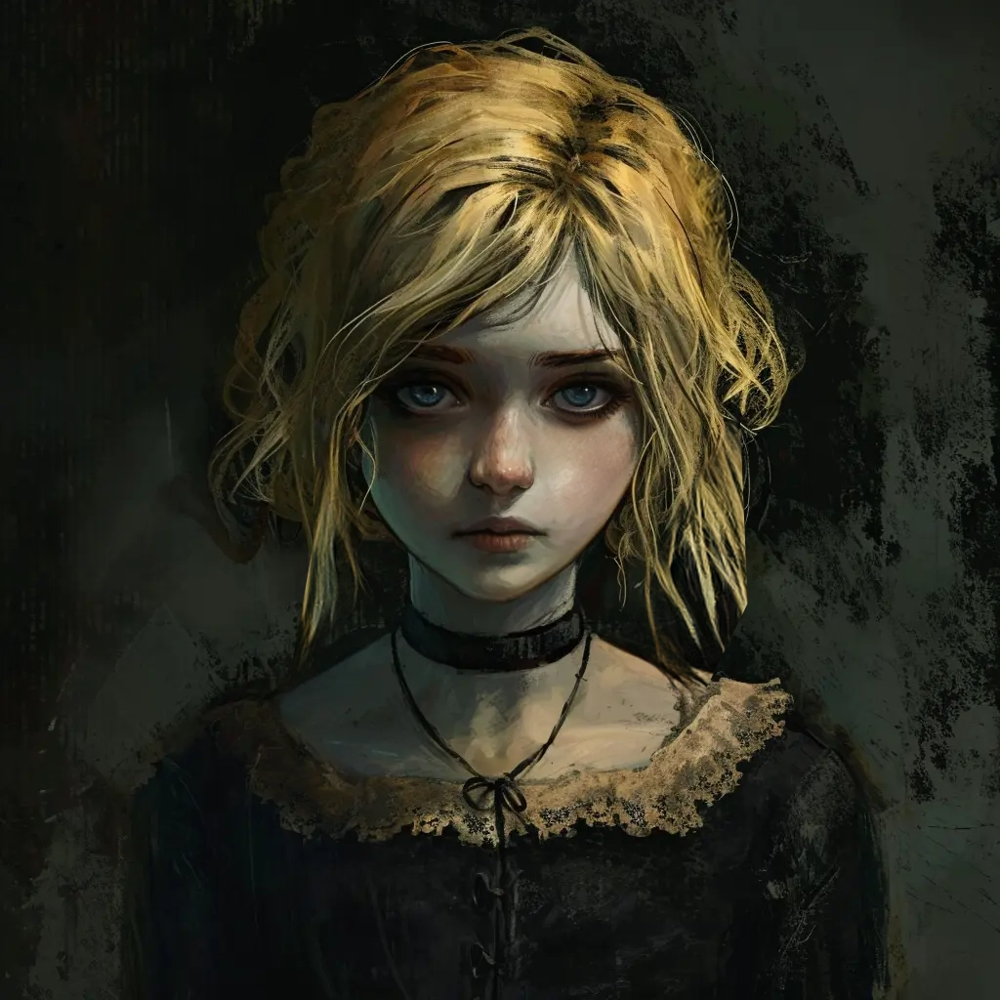

NSCs
Marina
Waisenkind aus dem St. Andrals Waisenhaus

8 Jahre alt
Beschreibung Das Mädchen, das anderen Kindern vorliest. Sie ist 10-11 Jahre alt, hat oben keine Schneidezähne, hat ein süßes kleines Gesicht, gepflegt mit dunklen Zöpfen, lispelt
- Sie hat dunkelblaue Flecken auf beiden Armen. Sie hat Bisswunden unter dem Kleid. Große Kieferabdrücke ohne tiefe Bisswunden. Sie jucken. Sie kratzt sich.